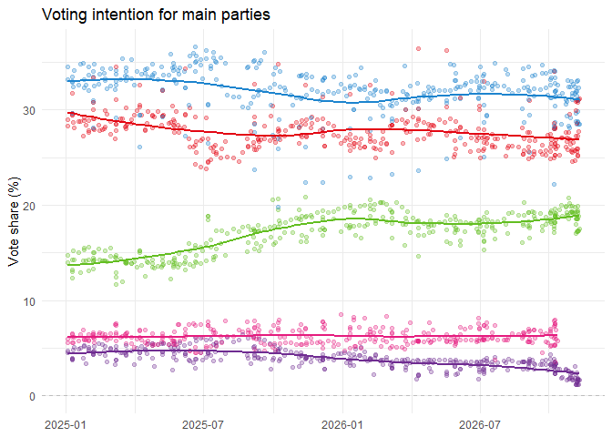

spainpolls is an R client for the Spain Electoral Polls API. It returns tidy tibbles for elections, pollsters, parties, polls, long-format poll results, and voting-intention time series.
The package queries the public read-only API documented in docs/r-package-handoff/. It does not access PostgreSQL directly, scrape data, or modify records.
Installation
# install.packages("pak")
pak::pak("hmeleiro/spainpolls")Covered Endpoints
The package covers these public endpoints:
GET /healthGET /api/v1/electionsGET /api/v1/pollstersGET /api/v1/partiesGET /api/v1/pollsGET /api/v1/polls/{poll_id}GET /api/v1/resultsGET /api/v1/timeseries
GET /api/v1/polls/{poll_id}/results is not implemented by the API. Use get_poll_results() to fetch /api/v1/polls/{poll_id} and extract the nested results.
Basic Use
library(spainpolls)
elections <- get_elections(limit = 10)
pollsters <- get_pollsters(election_key = "congreso_espana_2026")
parties <- get_parties(election_key = "congreso_espana_2026")
elections
#> # A tibble: 3 × 6
#> id election_key election_type territory_code election_name election_date
#> <int> <chr> <chr> <chr> <chr> <date>
#> 1 4 congreso_espan… general ES 2026 Spanish… 2026-11-29
#> 2 2 congreso_espan… general ES 2023 Spanish… 2023-07-23
#> 3 3 congreso_espan… general ES November 201… 2019-11-10
pollsters
#> # A tibble: 34 × 4
#> id pollster_key pollster_name poll_count
#> <int> <chr> <chr> <int>
#> 1 1 em_analytics EM-Analytics 172
#> 2 4 sociometrica SocioMétrica 44
#> 3 6 sigma_dos Sigma Dos 43
#> 4 16 cis CIS 37
#> 5 2 40db 40dB 36
#> 6 417 target_point Target Point 31
#> 7 18 nc_report NC Report 26
#> 8 9 keydata KeyData 23
#> 9 21 hamalgama_metrica Hamalgama Métrica 22
#> 10 10 dym DYM 21
#> # ℹ 24 more rows
parties
#> # A tibble: 18 × 8
#> party_key party_name short_name territory_code color_hex display_order
#> <chr> <chr> <chr> <chr> <chr> <int>
#> 1 adelante_andalu… Adelante … AA ES-AN #00a3ad 190
#> 2 bng Bloque Na… BNG ES-GA #76b82a 110
#> 3 cca Coalicion… CCa ES-CN #f6c915 130
#> 4 eaj_pnv EAJ/PNV PNV ES-PV #00843d 100
#> 5 eh_bildu EH Bildu EH Bildu ES-PV #b5c800 90
#> 6 erc Esquerra … ERC ES-CT #f3b217 70
#> 7 junts Junts per… Junts ES-CT #00a6a6 80
#> 8 podemos Podemos Podemos ES #6f2c91 50
#> 9 pp Partido P… PP ES #1d84ce 20
#> 10 psoe Partido S… PSOE ES #e30613 10
#> 11 vox Vox Vox ES #63be21 30
#> 12 sumar Sumar Sumar ES #e51b7e 40
#> 13 upn Union del… UPN ES-NC #005baa 140
#> 14 salf Se Acabo … SALF ES #5d6470 200
#> 15 alianca_cat Alianca C… AC ES-CT #2f80ed 210
#> 16 fa_fv Frente Am… FA–FV ES <NA> 35
#> 17 fa Frente Am… FA ES <NA> 35
#> 18 fv Compromís… FV ES-VC <NA> 36
#> # ℹ 2 more variables: is_active <lgl>, poll_count <int>Polls
polls <- get_polls(
election_key = "congreso_espana_2026",
limit = 10
)
poll <- get_poll(101)
poll_results <- get_poll_results(101)
poll
#> # A tibble: 1 × 19
#> id election_key election_name territory_code pollster_key pollster_name
#> <int> <chr> <chr> <chr> <chr> <chr>
#> 1 101 congreso_espana… 2023 Spanish… ES em_analytics EM-Analytics
#> # ℹ 13 more variables: media <chr>, fieldwork_start <date>,
#> # fieldwork_end <date>, publication_date <date>, sample_size <int>,
#> # turnout <dbl>, lead <dbl>, source_url <chr>, source_title <chr>,
#> # identity_status <chr>, first_seen_at <dttm>, is_active <lgl>,
#> # results <list>
poll_results
#> # A tibble: 16 × 9
#> party_key party_raw party_name short_name color_hex display_order vote_share
#> <chr> <chr> <chr> <chr> <chr> <int> <dbl>
#> 1 pp PP Partido P… PP #1d84ce 20 28.1
#> 2 psoe PSOE Partido S… PSOE #e30613 10 25.4
#> 3 vox Vox Vox Vox #63be21 30 17
#> 4 podemos Unidas Po… Podemos Podemos #6f2c91 50 9.9
#> 5 mas_pais Más País Mas Pais MP #14b8a6 170 3.5
#> 6 erc ERC–Sobir… Esquerra … ERC #f3b217 70 3.4
#> 7 cs Cs Ciudadanos Cs #eb6109 60 3
#> 8 junts Junts Junts per… Junts #00a6a6 80 2.3
#> 9 eaj_pnv PNV EAJ/PNV PNV #00843d 100 1.6
#> 10 eh_bildu EH Bildu EH Bildu EH Bildu #b5c800 90 1.1
#> 11 cup CUP Candidatu… CUP #ffed00 120 0.9
#> 12 bng BNG Bloque Na… BNG #76b82a 110 0.6
#> 13 cca CC–NCa Coalicion… CCa #f6c915 130 0.5
#> 14 na NA+ Navarra S… NA+ #005baa 140 0.4
#> 15 prc PRC Partido R… PRC #c8102e 150 0.3
#> 16 te TE Teruel Ex… TE #007B4D 212 0.1
#> # ℹ 2 more variables: seats_min <int>, seats_max <int>Long Results
results <- get_results(
election_key = "congreso_espana_2026",
party = "psoe",
collect_all = TRUE
)
results
#> # A tibble: 611 × 18
#> party_key party_raw party_name short_name color_hex display_order vote_share
#> <chr> <chr> <chr> <chr> <chr> <int> <dbl>
#> 1 psoe PSOE Partido So… PSOE #e30613 10 31.2
#> 2 psoe PSOE Partido So… PSOE #e30613 10 27.7
#> 3 psoe PSOE Partido So… PSOE #e30613 10 31.1
#> 4 psoe PSOE Partido So… PSOE #e30613 10 31
#> 5 psoe PSOE Partido So… PSOE #e30613 10 25.9
#> 6 psoe PSOE Partido So… PSOE #e30613 10 30.8
#> 7 psoe PSOE Partido So… PSOE #e30613 10 25.3
#> 8 psoe PSOE Partido So… PSOE #e30613 10 25.2
#> 9 psoe PSOE Partido So… PSOE #e30613 10 27.3
#> 10 psoe PSOE Partido So… PSOE #e30613 10 31
#> # ℹ 601 more rows
#> # ℹ 11 more variables: seats_min <int>, seats_max <int>, poll_id <int>,
#> # date <date>, election_key <chr>, pollster_key <chr>, pollster_name <chr>,
#> # media <chr>, fieldwork_end <date>, publication_date <date>,
#> # sample_size <int>Time Series
ts <- get_timeseries(
election_key = "congreso_espana_2026",
party = c("psoe", "pp", "vox", "sumar", "podemos"),
date_from = "2025-01-01", date_to = "2026-11-11",
collect_all = TRUE
)
ts
#> # A tibble: 1,824 × 15
#> date poll_id pollster_key pollster_name media sample_size party_key
#> <date> <int> <chr> <chr> <chr> <int> <chr>
#> 1 2026-11-09 1767 sw_demoscopia SW Demoscopia La Sépt… 6000 psoe
#> 2 2026-11-09 1767 sw_demoscopia SW Demoscopia La Sépt… 6000 pp
#> 3 2026-11-09 1767 sw_demoscopia SW Demoscopia La Sépt… 6000 vox
#> 4 2026-11-09 1767 sw_demoscopia SW Demoscopia La Sépt… 6000 podemos
#> 5 2026-11-08 1747 sociometrica SocioMétrica El Espa… 5460 pp
#> 6 2026-11-08 1747 sociometrica SocioMétrica El Espa… 5460 psoe
#> 7 2026-11-08 1747 sociometrica SocioMétrica El Espa… 5460 vox
#> 8 2026-11-08 1747 sociometrica SocioMétrica El Espa… 5460 podemos
#> 9 2026-11-08 1762 sw_demoscopia SW Demoscopia La Sépt… 5500 psoe
#> 10 2026-11-08 1762 sw_demoscopia SW Demoscopia La Sépt… 5500 pp
#> # ℹ 1,814 more rows
#> # ℹ 8 more variables: party_raw <chr>, party_name <chr>, short_name <chr>,
#> # color_hex <chr>, display_order <int>, vote_share <dbl>, seats_min <int>,
#> # seats_max <int>Plotting
library(ggplot2)
ggplot(ts, aes(x= date, y = vote_share, color = color_hex)) +
geom_hline(yintercept = 0, linetype = "dashed", color = "gray") +
geom_point(alpha = .3) +
geom_smooth(linewidth = 1, se = FALSE, span = .7) +
labs(
title = "Voting intention for main parties",
x = NULL,
y = "Vote share (%)"
) +
scale_color_identity() +
theme_minimal()
#> `geom_smooth()` using method = 'loess' and formula = 'y ~ x'
#> Warning: Removed 14 rows containing non-finite outside the scale range
#> (`stat_smooth()`).
#> Warning: Removed 14 rows containing missing values or values outside the scale range
#> (`geom_point()`).
Pagination
Paginated functions accept limit, offset, and collect_all.
all_results <- get_results(
election_key = "congreso_espana_2026",
collect_all = TRUE
)
all_results
#> # A tibble: 8,798 × 18
#> party_key party_raw party_name short_name color_hex display_order vote_share
#> <chr> <chr> <chr> <chr> <chr> <int> <dbl>
#> 1 psoe PSOE Partido S… PSOE #e30613 10 31.2
#> 2 pp PP Partido P… PP #1d84ce 20 28.5
#> 3 vox Vox Vox Vox #63be21 30 17.5
#> 4 fa_fv FA + FV Frente Am… FA–FV <NA> 35 7.5
#> 5 erc ERC Esquerra … ERC #f3b217 70 2.6
#> 6 salf SALF Se Acabo … SALF #5d6470 200 2
#> 7 podemos Podemos Podemos Podemos #6f2c91 50 1.7
#> 8 adelante_… Adelante… Adelante … AA #00a3ad 190 1.4
#> 9 eh_bildu EH Bildu EH Bildu EH Bildu #b5c800 90 1.4
#> 10 junts Junts Junts per… Junts #00a6a6 80 1.3
#> # ℹ 8,788 more rows
#> # ℹ 11 more variables: seats_min <int>, seats_max <int>, poll_id <int>,
#> # date <date>, election_key <chr>, pollster_key <chr>, pollster_name <chr>,
#> # media <chr>, fieldwork_end <date>, publication_date <date>,
#> # sample_size <int>When collect_all = TRUE, the client starts at offset 0 and requests pages until the API reports that all matching rows have been downloaded.
Errors
The package validates common bad inputs before making HTTP requests, including invalid limit, offset, dates, logical flags, poll_id, and date_field. HTTP errors from the API are rethrown as clear R errors with cli.
Spain Electoral Project
This package is part of the Spain Electoral Project ecosystem. Cite or link the Spain Electoral Project when using the API data in public work.
Current Limitations
- The API is read-only and unauthenticated in v1.
- Administrative endpoints are not included.
-
get_poll_results()extracts nested results because the API does not expose a separate poll-results route. - Sorting order is determined by the API and is not specified as a stable client contract.